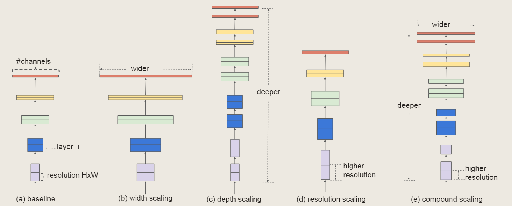
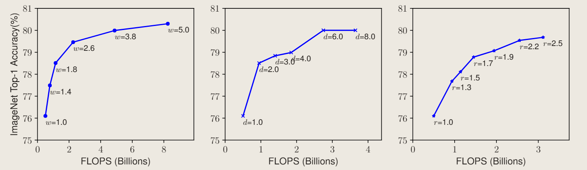
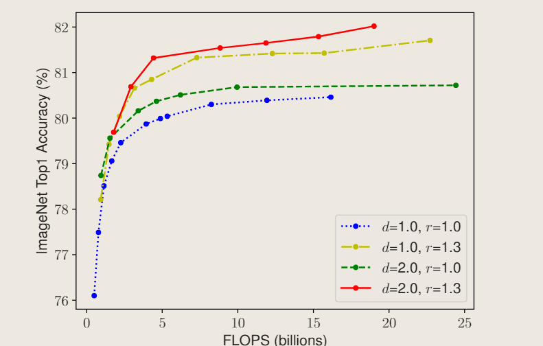
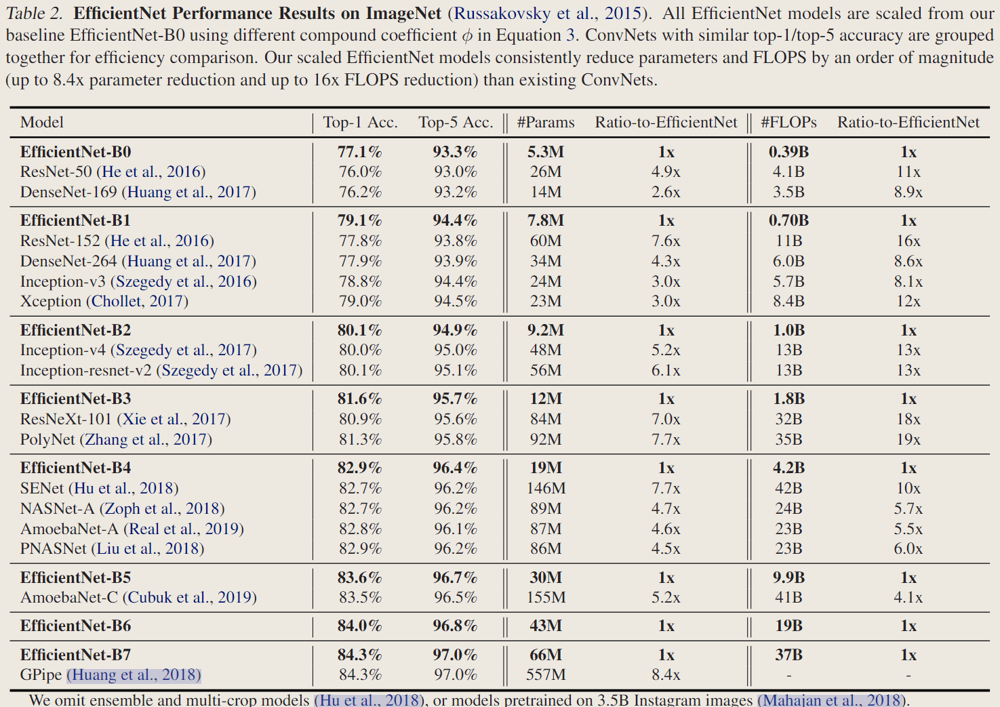
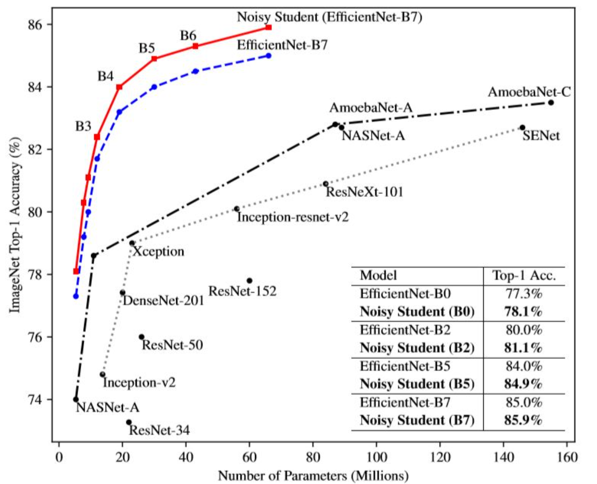
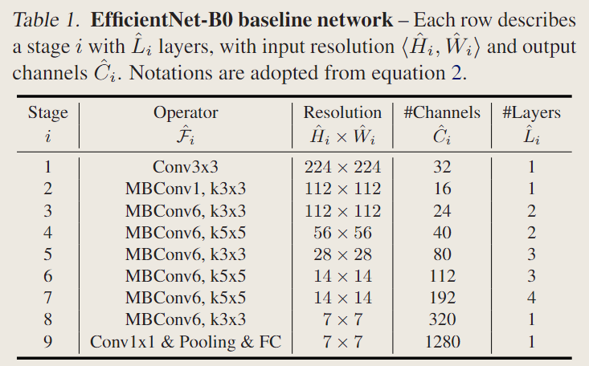
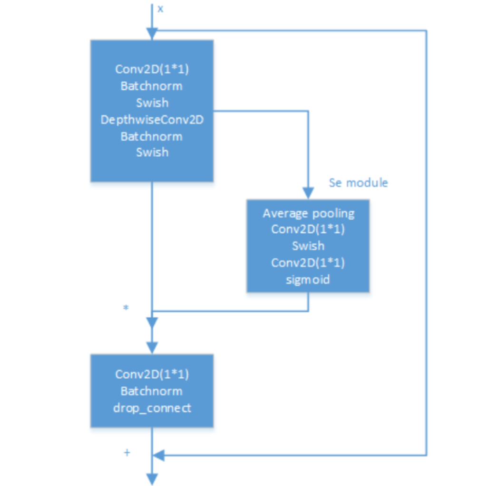
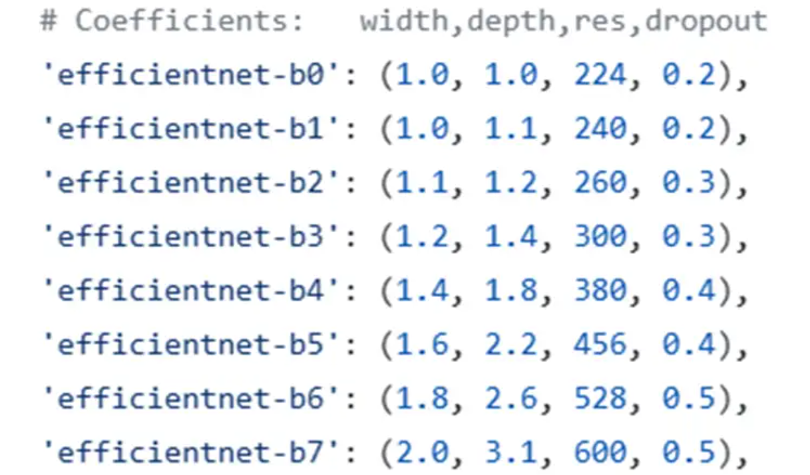

EfficientNet
相关信息
论文地址：EfficientNet:Rethinking Model Scaling for Convolutional Neural Networks
代码（Pytorch版）:https://github.com/lukemelas/EfficientNet-PyTorch/
本页内容是对EfficientNet的文章总结/代码阅读(侧重代码学习)
这是我阅读的第一篇DL论文与源码
文章摘要
EfficientNet这篇论文提出了一种新的模型缩放方法，通过仔细平衡网络深度（depth）、宽度(width)和分辨率(resolutinon)，在保持模型复杂度不变的情况下，显著提高了模型的性能。

传统的方法大多将卷积神经网络的规模分为以下几个维度之一:
-
Depth (d)：更深层次的ConvNet能够捕获更丰富、更复杂的特性，并能很好地概括新任务。然而，由于梯度消失问题，更深的网络也更难以训练。虽然skip connections和BatchNorm等技术缓解了训练问题，但是非常深的网络的准确率提高降低 -
Width (w)：更广泛的网络往往能够捕获更多的细粒度特征，更容易训练。然而，极宽但较浅的网络往往难以捕获更高层次的特征。当网络变得更宽时，随着w的增大，准确率很快饱和 -
Resolution (r)：增加输入网络的图像分辨率能够潜在得获得更高细粒度(fine-grained)的特征模板，但对于非常高的输入分辨率，准确率的增益也会减小。并且大分辨率图像会增加计算量。

由上图可知，扩大网络宽度、深度或分辨率的任何维度可以提高准确性，但对于较大的模型，精度增益会降低。
因此，为了追求更好的准确性和效率，在ConvNet缩放过程中，平衡网络宽度、深度和分辨率的所有维度是至关重要的。

文章提出了一种新的缩放方法，称为复合缩放方法
（Compound Scaling），它通过同时缩放深度、宽度和分辨率，以保持模型复杂度恒定，从而在保持模型复杂度不变的情况下，显著提高了模型的性能。
该方法使用复合系数\(\phi\)以特定的方式均匀缩放网络宽度、深度和分辨率：
其中，\(\phi\)是一个user-specified缩放系数，受限于可用的资源数量，而\(\alpha,\beta,\gamma\)是可以通过small grid search确定的常数。
卷积层的FLOPs
FLOPs（floating point operations）用来计算整个网络模型中乘法/加法的运行次数，可以用来衡量一个算法/模型等的复杂度。
对于常规的卷积操作的FLOPs与\(d,w^2.r^2\)成正比，即网络深度加倍会使FLOPs加倍，而网络宽度、分辨率加倍会使FLOPs增加4倍。
对于一个卷积层:
若为正方形卷积核则：
使用
Batch Norm时不需要bias，此时计算式中的+1项去除。
其中，\(C_i \times k_w \times k_h\)表示一次卷积操作中的乘法运算量，\(C_i \times k_w \times k_h - 1\)表示一次卷积操作中的加法运算量。
对于正方形卷积核：
在论文中，常常将一个’乘-加’组合视为一次浮点运算（Multi-Add）即：
$$ FLOPs = C_i \times C_o \times H \times W \times k^2 $$
本文中提出\(FOLPs \propto (\alpha \times \beta^2 \times \gamma^2)^\phi\)，并且约束\(\alpha \times \beta^2 \times \gamma^2 \approx 2\)使得\(FOLPs \propto 2^\phi\)
假设卷积核大小（\(k^2\)）和输入通道数(\(c_i\))都是常数，则：
由于\(d\)表示网络深度（卷积层的数量），\(w\)表示网络宽度（输出通道数的倍数），\(r\)表示分辨率（\(h\)和\(w\)的倍数）：
网络深度d没有平方是因为它只影响卷积层的数量，而不影响每个卷积层的计算量


当图像分辨率增大时，EfficientNet的所有卷积层和池化层的输入和输出尺寸也会相应地增大。但是，EfficientNet的卷积层和池化层的kernel_size和stride不会发生变化。这意味着，当图像分辨率增大时，EfficientNet的卷积层和池化层的感受野也会相应地增大。这有助于网络捕捉更多的细节和上下文信息。
EfficientNet的全连接层的输入尺寸也会随着图像分辨率的增大而增大，但是输出尺寸不会变化。这意味着，当图像分辨率增大时，EfficientNet的全连接层需要更多的参数来处理更多的特征。
另外，模型可以在训练时使用AdvProp（对抗样本），（Noisy Student），AutoAugment，label smoothing等技术来增强训练效果。
utils.py
-
使用
collections.namedtuple()自定义需要输入的参数结构，非常方便：Code
-
自定义
Swish激活函数（注意torch.autograd.Funciton的使用）：Code：Swish
-
自定义的
Dropconnect层:Code：drop_connect
-
由于
EfficientNet源码是使用tensorflow实现的，在卷积方式上存在不同之处，即'SAME'与'VALID'。若卷积方式设为
'SAME'，则卷积后输出的特征图与kernel_size无关，只跟stride有关。若stride=1，前后特征图大小保持不变，即自动padding补全。Code1：get_shape
Code2：Conv2d_Dynamic_Same_Padding
Code3：MaxPool2d_Same_Padding
-
Helper functions for loading model params
通过这些方式，可以在代码中灵活地使用字符串表示卷积块的参数，同时又能方便地进行解析和处理
Code4：查询各个模型的复合系数
Code5：读取模块参数字符串,例如'r1_k3_s11_e1_i32_o16_se0.25_noskip'
1 2 3 4 5 6 7 8 9 10 11 12 13 14 15 16 17 18 19 20 21 22 23 24 25 26 27 28 29 30 31 32 33 34 35 36 37 38 39 40 41 42 43 44 45 46 47 48 49 50 51 52 53 54 55 56 57 58 59 60 61 62 63 64 65 66 67 68 69 70 71 72 73 74 75 76 77 78 79 80 81 82 83 84 85 86 87 88 89 90 91 92 93 94 95 96 97 98 99 100 101 102 103 104 105 106 107 108 109 110
class BlockDecoder(object): """Block Decoder for readability, straight from the official TensorFlow repository. """ @staticmethod def _decode_block_string(block_string): """Get a block through a string notation of arguments. Args: block_string (str): A string notation of arguments. Examples: 'r1_k3_s11_e1_i32_o16_se0.25_noskip'. Returns: BlockArgs: The namedtuple defined at the top of this file. """ # 通过参数的字符串表示法获取一个模块 assert isinstance(block_string, str) ops = block_string.split('_') options = {} for op in ops: splits = re.split(r'(\d.*)', op) # 通过正则表达式将每个参数分割成键值对，例如 'r1' 分割成 ('r', '1')。 if len(splits) >= 2: key, value = splits[:2] options[key] = value #检查 stride 参数是否有效。 assert (('s' in options and len(options['s']) == 1) or (len(options['s']) == 2 and options['s'][0] == options['s'][1])) return BlockArgs( num_repeat=int(options['r']), kernel_size=int(options['k']), stride=[int(options['s'][0])], expand_ratio=int(options['e']), input_filters=int(options['i']), output_filters=int(options['o']), se_ratio=float(options['se']) if 'se' in options else None, id_skip=('noskip' not in block_string) ) # 将解析后的参数转换成BlockArgs(namedtuple)，并返回 @staticmethod def _encode_block_string(block): """Encode a block to a string. Args: block (namedtuple): A BlockArgs type argument. Returns: block_string: A String form of BlockArgs. """ # 将一个 BlockArgs(namedtuple)编码为字符串。 args = [ 'r%d' % block.num_repeat, 'k%d' % block.kernel_size, 's%d%d' % (block.strides[0], block.strides[1]), 'e%s' % block.expand_ratio, 'i%d' % block.input_filters, 'o%d' % block.output_filters ] if 0 < block.se_ratio <= 1: args.append('se%s' % block.se_ratio) if block.id_skip is False: args.append('noskip') return '_'.join(args) @staticmethod def decode(string_list): """Decode a list of string notations to specify blocks inside the network. Args: string_list (list[str]): A list of strings, each string is a notation of block. Returns: blocks_args: A list of BlockArgs namedtuples of block args. """ # 解码含有字符串符号的列表，来指定网络内的块。列表中的每个字符串代表一个不同的块 assert isinstance(string_list, list) blocks_args = [] for block_string in string_list: blocks_args.append(BlockDecoder._decode_block_string(block_string)) return blocks_args @staticmethod def encode(blocks_args): """Encode a list of BlockArgs to a list of strings. Args: blocks_args (list[namedtuples]): A list of BlockArgs namedtuples of block args. Returns: block_strings: A list of strings, each string is a notation of block. """ # 与decode(string_list)功能相反 block_strings = [] for block in blocks_args: block_strings.append(BlockDecoder._encode_block_string(block)) return block_stringsCode7：为模型创建BlockArgs和GlobalParams
-
卷积核缩放
round_filters/round_repeatCode：round_filters/round_repeat
model.py
原始模型Efficient Net-B0:

主要的构建模块为Mobile inverted bottleneck MBConv(出自MobileNet v2论文)

其中，该模型将ReLU换成了Swish，使用了drop_connect方法来代替传统的dropout方法
\(\alpha，\beta，\gamma\)缩放步骤：
-
首先固定\(\phi = 1\)，对\(\alpha，\beta，\gamma\)进行
small grid search,在\(\alpha \times \beta^2 \times \gamma^2 ≈ 2\)约束下，找到最优的\(\alpha，\beta，\gamma\)，我们发现EfficientNet-B0的最佳值为\alpha=1.2，\beta=1.1，\gamma=1.15 -
其次，我们将\(\alpha，\beta，\gamma\)固定为常数，并缩放具有不同\(\phi\)的基线网络，以获得
EfficientNet-B1 到 B7

-
主要模块：MBConvBlock,包含各种构建技巧
Code1：MBConvBlock
1 2 3 4 5 6 7 8 9 10 11 12 13 14 15 16 17 18 19 20 21 22 23 24 25 26 27 28 29 30 31 32 33 34 35 36 37 38 39 40 41 42 43 44 45 46 47 48 49 50 51 52 53 54 55 56 57 58 59 60 61 62 63 64 65 66 67 68 69 70 71 72 73 74 75 76 77 78 79 80 81 82 83 84 85 86 87 88 89 90 91 92 93 94 95 96 97 98 99 100 101 102 103 104 105 106 107 108
class MBConvBlock(nn.Module): """Mobile Inverted Residual Bottleneck Block. Args: block_args (namedtuple): BlockArgs, defined in utils.py. global_params (namedtuple): GlobalParam, defined in utils.py. image_size (tuple or list): [image_height, image_width]. References: [1] https://arxiv.org/abs/1704.04861 (MobileNet v1) [2] https://arxiv.org/abs/1801.04381 (MobileNet v2) [3] https://arxiv.org/abs/1905.02244 (MobileNet v3) """ def __init__(self, block_args, global_params, image_size=None): super().__init__() self._block_args = block_args # 块参数 self._bn_mom = 1 - global_params.batch_norm_momentum # pytorch's difference from tensorflow self._bn_eps = global_params.batch_norm_epsilon self.has_se = (self._block_args.se_ratio is not None) and (0 < self._block_args.se_ratio <= 1) self.id_skip = block_args.id_skip # whether to use skip connection and drop connect # Expansion phase (Inverted Bottleneck) 扩张 inp = self._block_args.input_filters # number of input channels oup = self._block_args.input_filters * self._block_args.expand_ratio # number of output channels if self._block_args.expand_ratio != 1: Conv2d = get_same_padding_conv2d(image_size=image_size) # 静态 or 动态 self._expand_conv = Conv2d(in_channels=inp, out_channels=oup, kernel_size=1, bias=False) self._bn0 = nn.BatchNorm2d(num_features=oup, momentum=self._bn_mom, eps=self._bn_eps) # image_size = calculate_output_image_size(image_size, 1) <-- kernel_size=1 wouldn't modify image_size # Depthwise convolution phase 深度可分离卷积 k = self._block_args.kernel_size s = self._block_args.stride Conv2d = get_same_padding_conv2d(image_size=image_size) self._depthwise_conv = Conv2d( in_channels=oup, out_channels=oup, groups=oup, # groups makes it depthwise kernel_size=k, stride=s, bias=False) self._bn1 = nn.BatchNorm2d(num_features=oup, momentum=self._bn_mom, eps=self._bn_eps) image_size = calculate_output_image_size(image_size, s) # Squeeze and Excitation layer, if desired if self.has_se: # 先AveragePooling() Conv2d = get_same_padding_conv2d(image_size=(1,1)) num_squeezed_channels = max(1, int(self._block_args.input_filters * self._block_args.se_ratio)) self._se_reduce = Conv2d(in_channels=oup, out_channels=num_squeezed_channels, kernel_size=1) self._se_expand = Conv2d(in_channels=num_squeezed_channels, out_channels=oup, kernel_size=1) # Pointwise convolution phase 逐点卷积 final_oup = self._block_args.output_filters Conv2d = get_same_padding_conv2d(image_size=image_size) self._project_conv = Conv2d(in_channels=oup, out_channels=final_oup, kernel_size=1, bias=False) self._bn2 = nn.BatchNorm2d(num_features=final_oup, momentum=self._bn_mom, eps=self._bn_eps) self._swish = MemoryEfficientSwish() def forward(self, inputs, drop_connect_rate=None): """MBConvBlock's forward function. Args: inputs (tensor): Input tensor. drop_connect_rate (bool): Drop connect rate (float, between 0 and 1). Returns: Output of this block after processing. """ # Expansion and Depthwise Convolution x = inputs if self._block_args.expand_ratio != 1: x = self._expand_conv(inputs) x = self._bn0(x) x = self._swish(x) x = self._depthwise_conv(x) x = self._bn1(x) x = self._swish(x) # Squeeze and Excitation if self.has_se: x_squeezed = F.adaptive_avg_pool2d(x, 1) x_squeezed = self._se_reduce(x_squeezed) x_squeezed = self._swish(x_squeezed) x_squeezed = self._se_expand(x_squeezed) x = torch.sigmoid(x_squeezed) * x # Pointwise Convolution x = self._project_conv(x) x = self._bn2(x) # Skip connection and drop connect input_filters, output_filters = self._block_args.input_filters, self._block_args.output_filters if self.id_skip and self._block_args.stride == 1 and input_filters == output_filters: # The combination of skip connection and drop connect brings about stochastic depth. if drop_connect_rate: x = drop_connect(x, p=drop_connect_rate, training=self.training) x = x + inputs # skip connection return x def set_swish(self, memory_efficient=True): """Sets swish function as memory efficient (for training) or standard (for export). Args: memory_efficient (bool): Whether to use memory-efficient version of swish. """ self._swish = MemoryEfficientSwish() if memory_efficient else Swish() -
主模型：
Code：EfficientNet
1 2 3 4 5 6 7 8 9 10 11 12 13 14 15 16 17 18 19 20 21 22 23 24 25 26 27 28 29 30 31 32 33 34 35 36 37 38 39 40 41 42 43 44 45 46 47 48 49 50 51 52 53 54 55 56 57 58 59 60 61 62 63 64 65 66 67 68 69 70 71 72 73 74 75 76 77 78 79 80 81 82 83 84 85 86 87 88 89 90 91 92 93 94 95 96 97 98 99 100 101 102 103 104 105 106 107 108 109 110 111 112 113 114 115 116 117 118 119 120 121 122 123 124 125 126 127 128 129 130 131 132 133 134 135 136 137 138 139 140 141 142 143 144 145 146 147 148 149 150 151 152 153 154 155 156 157 158 159 160 161 162 163 164 165 166 167 168 169 170 171 172 173 174 175 176 177 178 179 180 181 182 183 184 185 186 187 188 189 190 191 192 193 194 195 196 197 198 199 200 201 202 203 204 205 206 207 208 209 210 211 212 213 214 215 216 217 218 219 220 221 222 223 224 225 226 227 228 229 230 231 232 233 234 235 236 237 238 239 240 241 242 243 244 245 246 247 248 249 250 251 252 253 254 255 256 257 258 259 260 261 262 263 264 265 266 267 268 269 270 271 272 273 274 275 276 277 278 279
class EfficientNet(nn.Module): """EfficientNet model. Most easily loaded with the .from_name or .from_pretrained methods. Args: blocks_args (list[namedtuple]): A list of BlockArgs to construct blocks. global_params (namedtuple): A set of GlobalParams shared between blocks. References: [1] https://arxiv.org/abs/1905.11946 (EfficientNet) Example: >>> import torch >>> from efficientnet.model import EfficientNet >>> inputs = torch.rand(1, 3, 224, 224) >>> model = EfficientNet.from_pretrained('efficientnet-b0') >>> model.eval() >>> outputs = model(inputs) """ def __init__(self, blocks_args=None, global_params=None): super().__init__() assert isinstance(blocks_args, list), 'blocks_args should be a list' assert len(blocks_args) > 0, 'block args must be greater than 0' self._global_params = global_params self._blocks_args = blocks_args # Batch norm parameters bn_mom = 1 - self._global_params.batch_norm_momentum bn_eps = self._global_params.batch_norm_epsilon # Get stem static or dynamic convolution depending on image size image_size = global_params.image_size Conv2d = get_same_padding_conv2d(image_size=image_size) # Stem in_channels = 3 # rgb out_channels = round_filters(32, self._global_params) # number of output channels self._conv_stem = Conv2d(in_channels, out_channels, kernel_size=3, stride=2, bias=False) self._bn0 = nn.BatchNorm2d(num_features=out_channels, momentum=bn_mom, eps=bn_eps) image_size = calculate_output_image_size(image_size, 2) # Build blocks self._blocks = nn.ModuleList([]) for block_args in self._blocks_args: # Update block input and output filters based on depth multiplier. block_args = block_args._replace( input_filters=round_filters(block_args.input_filters, self._global_params), output_filters=round_filters(block_args.output_filters, self._global_params), num_repeat=round_repeats(block_args.num_repeat, self._global_params) ) # The first block needs to take care of stride and filter size increase. self._blocks.append(MBConvBlock(block_args, self._global_params, image_size=image_size)) image_size = calculate_output_image_size(image_size, block_args.stride) if block_args.num_repeat > 1: # modify block_args to keep same output size block_args = block_args._replace(input_filters=block_args.output_filters, stride=1) for _ in range(block_args.num_repeat - 1): self._blocks.append(MBConvBlock(block_args, self._global_params, image_size=image_size)) # image_size = calculate_output_image_size(image_size, block_args.stride) # stride = 1 # Head in_channels = block_args.output_filters # output of final block out_channels = round_filters(1280, self._global_params) # 全连接层也缩放 Conv2d = get_same_padding_conv2d(image_size=image_size) self._conv_head = Conv2d(in_channels, out_channels, kernel_size=1, bias=False) self._bn1 = nn.BatchNorm2d(num_features=out_channels, momentum=bn_mom, eps=bn_eps) # Final linear layer self._avg_pooling = nn.AdaptiveAvgPool2d(1) self._dropout = nn.Dropout(self._global_params.dropout_rate) self._fc = nn.Linear(out_channels, self._global_params.num_classes) self._swish = MemoryEfficientSwish() def set_swish(self, memory_efficient=True): """Sets swish function as memory efficient (for training) or standard (for export). Args: memory_efficient (bool): Whether to use memory-efficient version of swish. """ self._swish = MemoryEfficientSwish() if memory_efficient else Swish() for block in self._blocks: block.set_swish(memory_efficient) def extract_endpoints(self, inputs): """Use convolution layer to extract features from reduction levels i in [1, 2, 3, 4, 5]. Args: inputs (tensor): Input tensor. Returns: Dictionary of last intermediate features with reduction levels i in [1, 2, 3, 4, 5]. Example: >>> import torch >>> from efficientnet.model import EfficientNet >>> inputs = torch.rand(1, 3, 224, 224) >>> model = EfficientNet.from_pretrained('efficientnet-b0') >>> endpoints = model.extract_endpoints(inputs) >>> print(endpoints['reduction_1'].shape) # torch.Size([1, 16, 112, 112]) >>> print(endpoints['reduction_2'].shape) # torch.Size([1, 24, 56, 56]) >>> print(endpoints['reduction_3'].shape) # torch.Size([1, 40, 28, 28]) >>> print(endpoints['reduction_4'].shape) # torch.Size([1, 112, 14, 14]) >>> print(endpoints['reduction_5'].shape) # torch.Size([1, 1280, 7, 7]) """ endpoints = dict() # Stem x = self._swish(self._bn0(self._conv_stem(inputs))) prev_x = x # Blocks for idx, block in enumerate(self._blocks): drop_connect_rate = self._global_params.drop_connect_rate if drop_connect_rate: drop_connect_rate *= float(idx) / len(self._blocks) # scale drop connect_rate x = block(x, drop_connect_rate=drop_connect_rate) if prev_x.size(2) > x.size(2): endpoints[f'reduction_{len(endpoints)+1}'] = prev_x prev_x = x # Head x = self._swish(self._bn1(self._conv_head(x))) endpoints[f'reduction_{len(endpoints)+1}'] = x return endpoints def extract_features(self, inputs): """use convolution layer to extract feature . Args: inputs (tensor): Input tensor. Returns: Output of the final convolution layer in the efficientnet model. """ # Stem x = self._swish(self._bn0(self._conv_stem(inputs))) # Blocks for idx, block in enumerate(self._blocks): drop_connect_rate = self._global_params.drop_connect_rate if drop_connect_rate: drop_connect_rate *= float(idx) / len(self._blocks) # scale drop connect_rate # 根据网络深度的增加来增大 drop_connect_rate，开始时drop_connect_rate较小（drop概率小）,后续依次增大 x = block(x, drop_connect_rate=drop_connect_rate) # Head x = self._swish(self._bn1(self._conv_head(x))) return x def forward(self, inputs): """EfficientNet's forward function. Calls extract_features to extract features, applies final linear layer, and returns logits. Args: inputs (tensor): Input tensor. Returns: Output of this model after processing. """ # Convolution layers x = self.extract_features(inputs) # Pooling and final linear layer x = self._avg_pooling(x) x = x.flatten(start_dim=1) x = self._dropout(x) x = self._fc(x) return x @classmethod def from_name(cls, model_name, in_channels=3, **override_params): # 加载模型 """create an efficientnet model according to name. Args: model_name (str): Name for efficientnet. in_channels (int): Input data's channel number. override_params (other key word params): Params to override model's global_params. Optional key: 'width_coefficient', 'depth_coefficient', 'image_size', 'dropout_rate', 'num_classes', 'batch_norm_momentum', 'batch_norm_epsilon', 'drop_connect_rate', 'depth_divisor', 'min_depth' Returns: An efficientnet model. """ cls._check_model_name_is_valid(model_name) blocks_args, global_params = get_model_params(model_name, override_params) model = cls(blocks_args, global_params) model._change_in_channels(in_channels) return model @classmethod def from_pretrained(cls, model_name, weights_path=None, advprop=False, in_channels=3, num_classes=1000, **override_params): # 加载预训练（pretrained）的模型 """create an efficientnet model according to name. Args: model_name (str): Name for efficientnet. weights_path (None or str): str: path to pretrained weights file on the local disk. None: use pretrained weights downloaded from the Internet. advprop (bool): Whether to load pretrained weights trained with advprop (valid when weights_path is None). in_channels (int): Input data's channel number. num_classes (int): Number of categories for classification. It controls the output size for final linear layer. override_params (other key word params): Params to override model's global_params. Optional key: 'width_coefficient', 'depth_coefficient', 'image_size', 'dropout_rate', 'num_classes', 'batch_norm_momentum', 'batch_norm_epsilon', 'drop_connect_rate', 'depth_divisor', 'min_depth' Returns: A pretrained efficientnet model. """ model = cls.from_name(model_name, num_classes = num_classes, **override_params) load_pretrained_weights(model, model_name, weights_path=weights_path, load_fc=(num_classes == 1000), advprop=advprop) model._change_in_channels(in_channels) return model @classmethod def get_image_size(cls, model_name): """Get the input image size for a given efficientnet model. Args: model_name (str): Name for efficientnet. Returns: Input image size (resolution). """ cls._check_model_name_is_valid(model_name) _, _, res, _ = efficientnet_params(model_name) # 返回parameter coefficients的resolution(图片分辨率) return res @classmethod def _check_model_name_is_valid(cls, model_name): """Validates model name. Args: model_name (str): Name for efficientnet. Returns: bool: Is a valid name or not. """ if model_name not in VALID_MODELS: raise ValueError('model_name should be one of: ' + ', '.join(VALID_MODELS)) def _change_in_channels(self, in_channels): """Adjust model's first convolution layer to in_channels, if in_channels not equals 3. Args: in_channels (int): Input data's channel number. """ if in_channels != 3: Conv2d = get_same_padding_conv2d(image_size = self._global_params.image_size) out_channels = round_filters(32, self._global_params) self._conv_stem = Conv2d(in_channels, out_channels, kernel_size=3, stride=2, bias=False)
test_model.py
-
test_model
Code4：查询各个模型的复合系数
<\details>1 2 3 4 5 6 7 8 9 10 11 12 13 14 15 16 17 18 19 20 21 22 23 24 25 26 27 28 29 30 31 32 33 34 35 36 37 38 39 40 41 42 43 44 45 46 47 48 49 50 51 52 53 54 55 56 57 58 59 60 61 62 63 64 65 66 67 68 69 70 71 72 73 74 75 76 77 78 79 80 81 82 83 84 85 86 87 88 89 90 91 92 93 94 95 96 97 98 99 100 101 102 103 104 105 106 107 108 109 110 111 112 113 114 115 116 117 118 119 120 121 122 123 124
from collections import OrderedDict import pytest import torch import torch.nn as nn from efficientnet_pytorch import EfficientNet # -- fixtures ------------------------------------------------------------------------------------- @pytest.fixture(scope='module', params=[x for x in range(4)]) def model(request): return 'efficientnet-b{}'.format(request.param) @pytest.fixture(scope='module', params=[True, False]) def pretrained(request): return request.param @pytest.fixture(scope='function') def net(model, pretrained): return EfficientNet.from_pretrained(model) if pretrained else EfficientNet.from_name(model) # -- tests ---------------------------------------------------------------------------------------- @pytest.mark.parametrize('img_size', [224, 256, 512]) def test_forward(net, img_size): """Test `.forward()` doesn't throw an error""" data = torch.zeros((1, 3, img_size, img_size)) output = net(data) assert not torch.isnan(output).any() def test_dropout_training(net): """Test dropout `.training` is set by `.train()` on parent `nn.module`""" net.train() assert net._dropout.training == True def test_dropout_eval(net): """Test dropout `.training` is set by `.eval()` on parent `nn.module`""" net.eval() assert net._dropout.training == False def test_dropout_update(net): """Test dropout `.training` is updated by `.train()` and `.eval()` on parent `nn.module`""" net.train() assert net._dropout.training == True net.eval() assert net._dropout.training == False net.train() assert net._dropout.training == True net.eval() assert net._dropout.training == False @pytest.mark.parametrize('img_size', [224, 256, 512]) def test_modify_dropout(net, img_size): """Test ability to modify dropout and fc modules of network""" dropout = nn.Sequential(OrderedDict([ ('_bn2', nn.BatchNorm1d(net._bn1.num_features)), ('_drop1', nn.Dropout(p=net._global_params.dropout_rate)), ('_linear1', nn.Linear(net._bn1.num_features, 512)), ('_relu', nn.ReLU()), ('_bn3', nn.BatchNorm1d(512)), ('_drop2', nn.Dropout(p=net._global_params.dropout_rate / 2)) ])) fc = nn.Linear(512, net._global_params.num_classes) net._dropout = dropout net._fc = fc data = torch.zeros((2, 3, img_size, img_size)) output = net(data) assert not torch.isnan(output).any() @pytest.mark.parametrize('img_size', [224, 256, 512]) def test_modify_pool(net, img_size): """Test ability to modify pooling module of network""" class AdaptiveMaxAvgPool(nn.Module): def __init__(self): super().__init__() self.ada_avgpool = nn.AdaptiveAvgPool2d(1) self.ada_maxpool = nn.AdaptiveMaxPool2d(1) def forward(self, x): avg_x = self.ada_avgpool(x) max_x = self.ada_maxpool(x) x = torch.cat((avg_x, max_x), dim=1) return x avg_pooling = AdaptiveMaxAvgPool() fc = nn.Linear(net._fc.in_features * 2, net._global_params.num_classes) net._avg_pooling = avg_pooling net._fc = fc data = torch.zeros((2, 3, img_size, img_size)) output = net(data) assert not torch.isnan(output).any() @pytest.mark.parametrize('img_size', [224, 256, 512]) def test_extract_endpoints(net, img_size): """Test `.extract_endpoints()` doesn't throw an error""" data = torch.zeros((1, 3, img_size, img_size)) endpoints = net.extract_endpoints(data) assert not torch.isnan(endpoints['reduction_1']).any() assert not torch.isnan(endpoints['reduction_2']).any() assert not torch.isnan(endpoints['reduction_3']).any() assert not torch.isnan(endpoints['reduction_4']).any() assert not torch.isnan(endpoints['reduction_5']).any() assert endpoints['reduction_1'].size(2) == img_size // 2 assert endpoints['reduction_2'].size(2) == img_size // 4 assert endpoints['reduction_3'].size(2) == img_size // 8 assert endpoints['reduction_4'].size(2) == img_size // 16 assert endpoints['reduction_5'].size(2) == img_size // 32
main.py
-
argparse解析命令行参数
Code1：MBConvBlock
-
学习率衰减
learning_rateCode：adjust_learning_rate
-
Top-K精度计算Code：Top-K
-
main函数main主程序，其中涉及参数解析、随机种子设置、设备设置、分布式训练设置、模型创建、优化器设置、数据加载、训练和验证等步骤Code：accuracy
1 2 3 4 5 6 7 8 9 10 11 12 13 14 15 16 17 18 19 20 21 22 23 24 25 26 27 28 29 30 31 32 33 34 35 36 37 38 39 40 41 42 43 44 45 46 47 48 49 50 51 52 53 54 55 56 57 58 59 60 61 62 63 64 65 66 67 68 69 70 71 72 73 74 75 76 77 78 79 80 81 82 83 84 85 86 87 88 89 90 91 92 93 94 95 96 97 98 99 100 101 102 103 104 105 106 107 108 109 110 111 112 113 114 115 116 117 118 119 120 121 122 123 124 125 126 127 128 129 130 131 132 133 134 135 136 137 138 139 140 141 142 143 144 145 146 147 148 149 150 151 152 153 154 155 156 157 158 159 160 161 162 163 164 165 166 167 168 169 170 171 172 173 174 175 176 177 178 179 180 181 182 183 184 185 186 187 188 189 190 191 192 193 194 195 196 197 198 199 200 201 202 203 204 205
def main(): args = parser.parse_args() if args.seed is not None: random.seed(args.seed) torch.manual_seed(args.seed) cudnn.deterministic = True # 强制cuDNN使用确定性的算法,从而保证结果的一致性 warnings.warn('You have chosen to seed training. ' 'This will turn on the CUDNN deterministic setting, ' 'which can slow down your training considerably! ' 'You may see unexpected behavior when restarting ' 'from checkpoints.') if args.gpu is not None: warnings.warn('You have chosen a specific GPU. This will completely ' 'disable data parallelism.') if args.dist_url == "env://" and args.world_size == -1: args.world_size = int(os.environ["WORLD_SIZE"]) args.distributed = args.world_size > 1 or args.multiprocessing_distributed ngpus_per_node = torch.cuda.device_count() if args.multiprocessing_distributed: # Since we have ngpus_per_node processes per node, the total world_size # needs to be adjusted accordingly args.world_size = ngpus_per_node * args.world_size # Use torch.multiprocessing.spawn to launch distributed processes: the # main_worker process function mp.spawn(main_worker, nprocs=ngpus_per_node, args=(ngpus_per_node, args)) else: # Simply call main_worker function main_worker(args.gpu, ngpus_per_node, args) def main_worker(gpu, ngpus_per_node, args): global best_acc1 args.gpu = gpu if args.gpu is not None: print("Use GPU: {} for training".format(args.gpu)) if args.distributed: if args.dist_url == "env://" and args.rank == -1: args.rank = int(os.environ["RANK"]) if args.multiprocessing_distributed: # For multiprocessing distributed training, rank needs to be the # global rank among all the processes args.rank = args.rank * ngpus_per_node + gpu dist.init_process_group(backend=args.dist_backend, init_method=args.dist_url, world_size=args.world_size, rank=args.rank) # create model if 'efficientnet' in args.arch: # NEW if args.pretrained: model = EfficientNet.from_pretrained(args.arch, advprop=args.advprop) print("=> using pre-trained model '{}'".format(args.arch)) else: print("=> creating model '{}'".format(args.arch)) model = EfficientNet.from_name(args.arch) else: if args.pretrained: print("=> using pre-trained model '{}'".format(args.arch)) model = models.__dict__[args.arch](pretrained=True) else: print("=> creating model '{}'".format(args.arch)) model = models.__dict__[args.arch]() if args.distributed: # For multiprocessing distributed, DistributedDataParallel constructor # should always set the single device scope, otherwise, # DistributedDataParallel will use all available devices. if args.gpu is not None: torch.cuda.set_device(args.gpu) model.cuda(args.gpu) # When using a single GPU per process and per # DistributedDataParallel, we need to divide the batch size # ourselves based on the total number of GPUs we have args.batch_size = int(args.batch_size / ngpus_per_node) args.workers = int(args.workers / ngpus_per_node) model = torch.nn.parallel.DistributedDataParallel(model, device_ids=[args.gpu]) else: model.cuda() # DistributedDataParallel will divide and allocate batch_size to all # available GPUs if device_ids are not set model = torch.nn.parallel.DistributedDataParallel(model) elif args.gpu is not None: torch.cuda.set_device(args.gpu) model = model.cuda(args.gpu) else: # DataParallel will divide and allocate batch_size to all available GPUs if args.arch.startswith('alexnet') or args.arch.startswith('vgg'): model.features = torch.nn.DataParallel(model.features) model.cuda() else: model = torch.nn.DataParallel(model).cuda() # define loss function (criterion) and optimizer criterion = nn.CrossEntropyLoss().cuda(args.gpu) optimizer = torch.optim.RMSprop(model.parameters(), args.lr, momentum=args.momentum, weight_decay=args.weight_decay) # optionally resume from a checkpoint if args.resume: if os.path.isfile(args.resume): print("=> loading checkpoint '{}'".format(args.resume)) checkpoint = torch.load(args.resume) args.start_epoch = checkpoint['epoch'] best_acc1 = checkpoint['best_acc1'] if args.gpu is not None: # best_acc1 may be from a checkpoint from a different GPU best_acc1 = best_acc1.to(args.gpu) model.load_state_dict(checkpoint['state_dict']) optimizer.load_state_dict(checkpoint['optimizer']) print("=> loaded checkpoint '{}' (epoch {})" .format(args.resume, checkpoint['epoch'])) else: print("=> no checkpoint found at '{}'".format(args.resume)) cudnn.benchmark = True # Data loading code traindir = os.path.join(args.data, 'train') valdir = os.path.join(args.data, 'val') if args.advprop: normalize = transforms.Lambda(lambda img: img * 2.0 - 1.0) else: normalize = transforms.Normalize(mean=[0.485, 0.456, 0.406], std=[0.229, 0.224, 0.225]) # 常用的 ImageNet 归一化参数 if 'efficientnet' in args.arch: image_size = EfficientNet.get_image_size(args.arch) else: image_size = args.image_size # 的图像预处理和数据增强操作 train_dataset = datasets.ImageFolder( traindir, transforms.Compose([ transforms.RandomResizedCrop(image_size), # 随机裁剪 transforms.RandomHorizontalFlip(), # 随机水平翻转 transforms.ToTensor(), normalize, ])) if args.distributed: train_sampler = torch.utils.data.distributed.DistributedSampler(train_dataset) else: train_sampler = None train_loader = torch.utils.data.DataLoader( train_dataset, batch_size=args.batch_size, shuffle=(train_sampler is None), num_workers=args.workers, pin_memory=True, sampler=train_sampler) val_transforms = transforms.Compose([ transforms.Resize(image_size, interpolation=PIL.Image.BICUBIC), # 双立方插值法 transforms.CenterCrop(image_size), transforms.ToTensor(), normalize, ]) print('Using image size', image_size) val_loader = torch.utils.data.DataLoader( datasets.ImageFolder(valdir, val_transforms), batch_size=args.batch_size, shuffle=False, num_workers=args.workers, pin_memory=True) # 'pin_memory' 参数决定是否将数据加载到固定内存（页锁定内存）中。 # 设置为 True 时，数据将加载到固定内存中，然后再传输到 GPU，这样可以加快数据传输速度，特别是在使用 GPU 训练时。 if args.evaluate: res = validate(val_loader, model, criterion, args) with open('res.txt', 'w') as f: print(res, file=f) return for epoch in range(args.start_epoch, args.epochs): if args.distributed: train_sampler.set_epoch(epoch) adjust_learning_rate(optimizer, epoch, args) # 调整学习率 # train for one epoch train(train_loader, model, criterion, optimizer, epoch, args) # evaluate on validation set acc1 = validate(val_loader, model, criterion, args) # remember best acc@1 and save checkpoint is_best = acc1 > best_acc1 best_acc1 = max(acc1, best_acc1) if not args.multiprocessing_distributed or (args.multiprocessing_distributed and args.rank % ngpus_per_node == 0): save_checkpoint({ 'epoch': epoch + 1, 'arch': args.arch, 'state_dict': model.state_dict(), 'best_acc1': best_acc1, 'optimizer' : optimizer.state_dict(), }, is_best) # 'save_checkpoint'函数会根据'is_best'参数决定是否更新最佳模型文件。 -
训练与测试
Code：train/validate
-
训练跟踪进度
Code
事实上，EfficientNet模型虽然有着很低的FLOPs，却伴随着较高的推理时间，比如B3版本的FLOPs不到ResNet50的一半，推理速度却是ResNet50的两倍
可知，EfficientNet模型是一种低FLOPs、高数据读写量的模型，由于Depthwise Conv操作，使得模型把大量的时间浪费在了从显存中读写数据上，从而导致GPU的算力没有得到“充分利用”